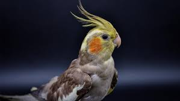
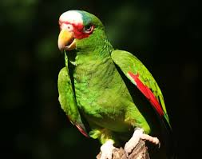
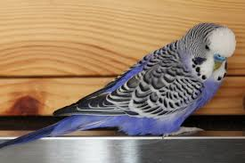

Locul perfect unde sa iti gasesti cel mai bun prieten.
Aici veti gasi pasari frumoase si inteligente, pline de personalitate, care viseaza la un camin iubitor unde sa se bucure de companie si de zbor liber.
Coco este un papagal jucaus, cu pene gri si obraji portocalii. Adora sa fluiere melodii si sa fie in centrul atentiei.
Rico are pene viu colorate in verde si galben, fiind un adevarat spectacol vizual. Este sociabil si incearca mereu sa imite sunetele din jur.
Blue are un penaj albastru strălucitor și o personalitate veselă. Este curios și iubește să exploreze colivia sa plină de jucării.
